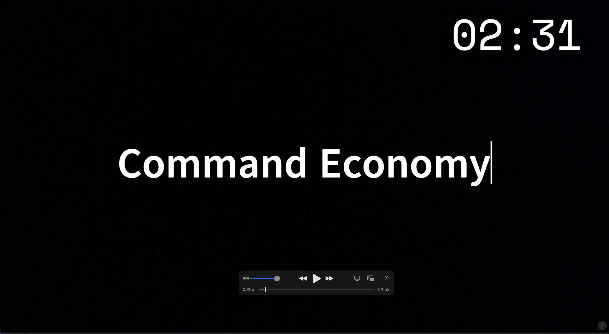

In the second semester of my junior year, in Mr. Huntley’s economics class, we were presented with the option to either create a simple billboard or produce a video. Despite the majority of our class opting for the billboard, my group, comprising myself along with Aiden Duncan, Parker Jones, Lincoln Archer, and Jack LaPorte, chose to go beyond expectations and produce a video. In this video assignment, our task was to produce a creative presentation discussing the definition and both the advantages and disadvantages of a command economy. This aligns with Benchmark 11-45, as we actively sought to improve our project by choosing a more complex and creative approach. This project holds significant importance for my career as an engineer as it demonstrates my willingness to think outside the box, tackle challenges head-on, and push boundaries to achieve innovative solutions. This experience highlights my ability to approach tasks with a proactive and inventive mindset, qualities that will undoubtedly serve me well in my future endeavors as an engineer.
